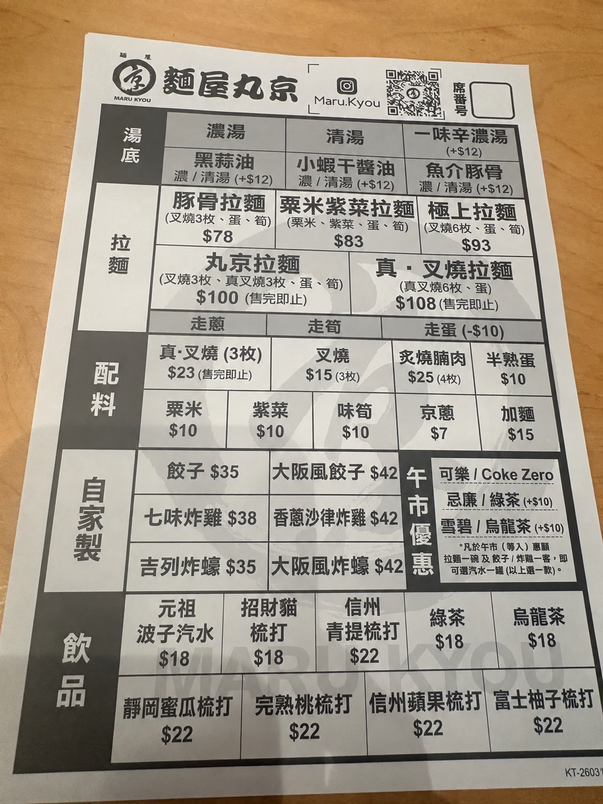

午市每人惠顧拉麵一碗及餃子／炸雞一客，可選優惠飲品一罐；綠茶、烏龍茶加 $10。請按實際優惠資格加入。
每位填一個名；同拉麵用相同名字就會合併計算。填咗多人分食後，會用呢度嘅人名取代上面「邊位食」。每份平均分至仙，尾數按填寫次序分配。
價錢按你提供嘅餐牌。限定餐點可自訂完整價錢；配料、飲品、拉麵及小食都可以設為免費。免費項目唔佔分攤金額。
以湯底、配料及走蛋調整後嘅整碗價錢為準；$78 拉麵照收 $78。自訂拉麵請勾選「呢項係拉麵」。
先扣除照原價項目，餘額按其他項目原價比例分攤。